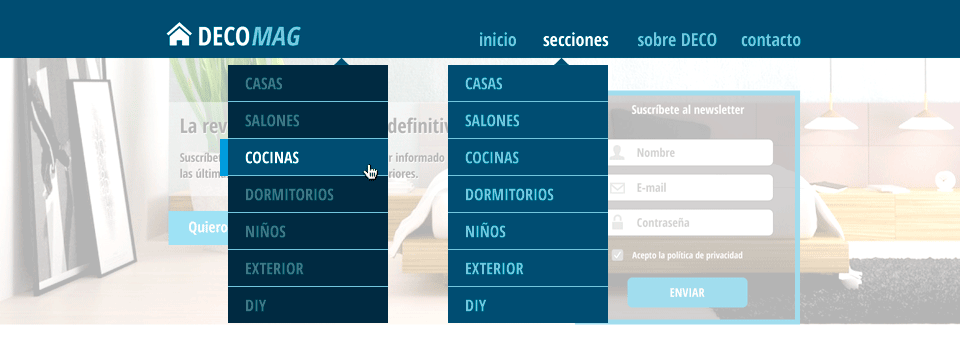

---
layout: global
title: 'Fundamentos CSS'
lesson_title: 'Unidades de medida y Terminal UNIX'
---
{% include slides/10/sublime-tip-find-files.html %}
{% include slides/10/css-units.html %}
{% include slides/10/terminal-unix.html %}
Ejercicio
Añade un dropdown en la landing page DecoMAG
